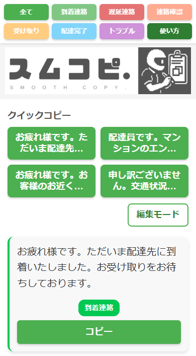
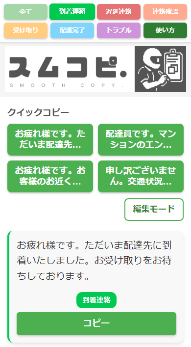
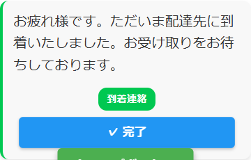
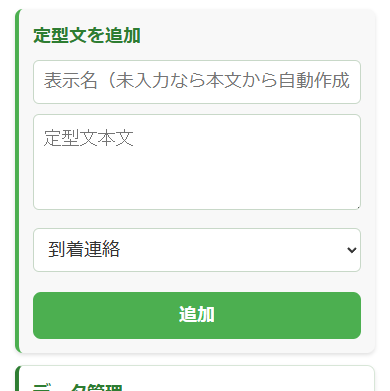
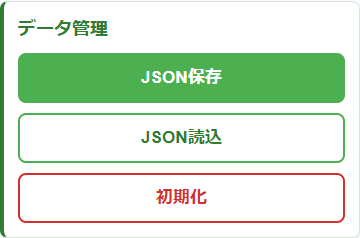

スムコピでできること
お客様へ送る文章を探して「コピー」を押すと、文章がスマホにコピーされます。あとは配達アプリのメッセージ欄に貼り付けて送ります。
到着連絡、遅延連絡、置き配、配達完了など、配達の場面ごとに文章を選べます。
スムコピを開く配達開始前：使う文章を確認する
稼働前に、よく使う文章が入っているか見ておくと、配達中にあわてず使えます。

- 上の色つきボタンで、文章の種類を切り替えます。
- 「使い方」も上のメニューから開けます。
- 「クイックコピー」は、よく使う文章をすぐ押せる場所です。
- 下の「定型文」「ペース」で、スムコピと配達ペースチェッカーを切り替えられます。
配達中：必要な文章をコピーする
配達中は、状況に合う種類を押して、使いたい文章の「コピー」を押します。

- 例：「到着連絡」「遅延連絡」「置き配」など、上の種類を選びます。
- 送りたい文章を確認します。
- 「コピー」を押します。
- 配達アプリに戻り、メッセージ欄を長押しして貼り付けます。

コピーできると、ボタンや通知で完了がわかります。
コピーしただけでは相手に送られません。必ず配達アプリに貼り付けて、内容を確認してから送信してください。
今の売上や件数を見たいときは、画面下の「ペース」を押すと配達ペースチェッカーへ移動できます。定型文に戻るときは、ペース画面下の「定型文」を押します。
スムコピ画面では「定型文」が選ばれています。「ペース」を押すと配達ペースチェッカーへ移動します。
配達ペースチェッカー画面では「ペース」が選ばれています。「定型文」を押すとスムコピへ戻ります。
配達完了後：最後の連絡を送る
置き配したあとや、最後に連絡が必要な時は、「配達完了」の文章を使うと短時間で丁寧な連絡ができます。
- 置き配の場合は、置いた場所がわかる文章に直してから送ると安心です。
- 文章の内容が今の状況に合っているか、送信前に一度見直してください。
文章の追加・編集
自分がよく使う文章に変えたいときは、「編集モード」を押します。

- 「編集モード」を押します。
- 新しい文章を追加する場合は、表示名と本文を入れて「追加」を押します。
- すでにある文章を変える場合は、本文を書き直して「保存」を押します。
- よく使う文章は「お気に入り」にすると、クイックコピーに出しやすくなります。
- 不要な文章は「削除」を押します。
初期化を押すと、追加や編集した文章が戻る場合があります。押す前に必要な文章が残っているか確認してください。
データ管理
編集モードでは、定型文データを保存したり、前に保存したデータを読み込んだりできます。

- 「JSON保存」は、今の定型文データをファイルとして保存します。機種変更やバックアップ用です。
- 「JSON読込」は、保存しておいた定型文データを読み込みます。
- 「初期化」は、定型文を最初の状態に戻します。自分で追加・編集した内容が消える場合があります。